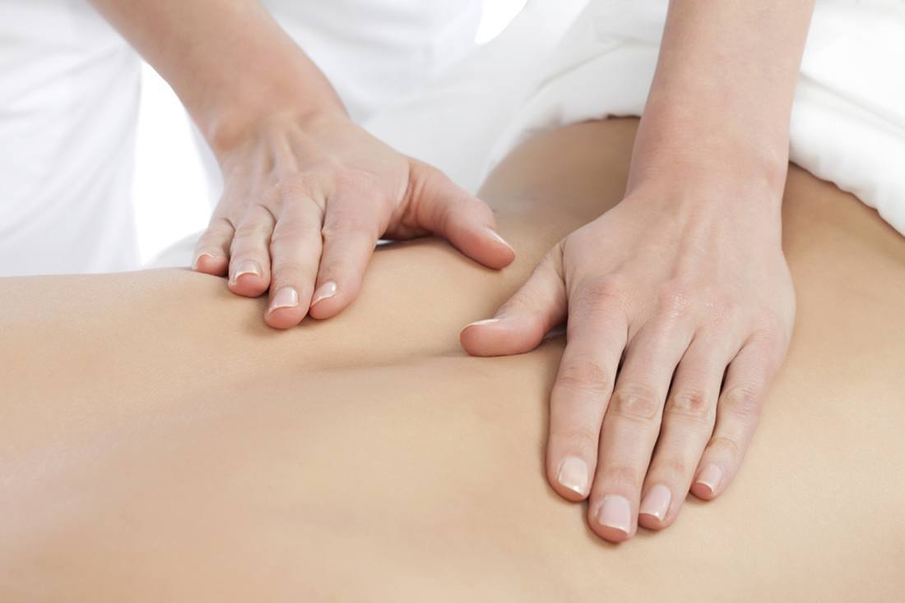
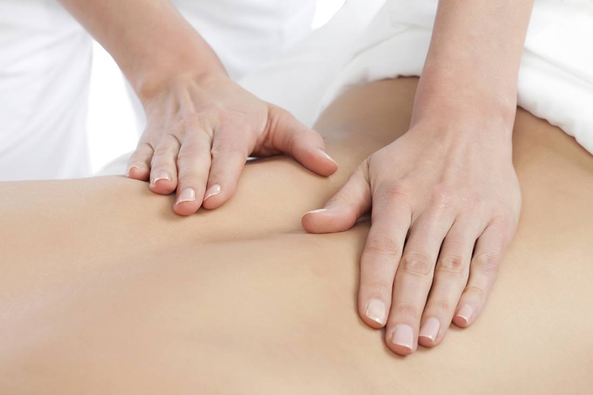

Par Mums
Tā ir laba sajūta - būt enerģiskam, mundram, stresa nenomāktam un skaistam. Tad arī pasaule apkārt liekas labāka un skaistāka un lietas sokas veiksmīgāk.
Kā tādam būt?
Ir daudz iespēju nodarboties ar dažādām lietām, kas sirdij tuvas, apmeklēt vietas un pasākumus, kas sniedz prieku un iedvesmu. Ja atnāksiet pie mums uz salonu, ļoti iespējams, ka šeit smelsieties pozitīvas emocijas un iegūsiet enerģiju un dzīvesprieku.
Piedāvājam plašu masāžu klāstu - ajurvēdiskās, klasiskās, SPA un reflektorās masāžas - par patiesi draudzīgām cenām! Masāžas pēc iepriekšēja pieraksta pieejamas Rīgā un Milzkalnē, Smārdes pagastā. Rīgā piedāvājam arī taro konsultācijas pie sertificētas taroloģes. Sīkāku aprakstu par masāžām un taro konsultācijām varat lasīt nākamajās sadaļās.
Masiere Biruta

Masāžu veic sertificēta masiere Biruta, kas masāžas prasmes apguvusi pie Tamāras Rimšas, Natālijas Jakovļevas un pie Ingas Šivas centrā.
Biruta: "Jau vairāk kā 20 gadus apgūstu dažādus kursus Šivas centrā (ajurvēda, vēdiskā numeroloģija, cilvēka raksturojums pēc ārējā izskata, roku līnijām, kurss par emocijām, hatha joga, mudras - pirkstu un roku pozas, kas palīdz mainīt domāšanu un uzlabot veselību, vaštu šastra - par to, kā organizēt objektus atkarībā no debess pusēm, rasa joga - zinātne par emocijām, un vēl ļoti daudz ko citu). Esmu apmeklējusi arī nodarbības centrā Raduga 2005, no kurām īpaši gribu atzīmēt kursu par dažādu slimību emocionālajiem cēloņiem. Man ir 2. pakāpe Reiki.
Nozīmīgs pavērsiens manā dzīvē bija pirmais Indijas apmeklējums 2007. gadā. Ajurvēdiskās masāžas kursu apguve man bija loģisks turpinājums pasaules izzināšanā, interesē par vēdiskajām zinībām un sava ceļa meklējumos."
"Novēlu ikvienam atrast savu vietu dzīvē un sasniegt savas virsotnes!"
Masāžas
 Reflektorās masāžas

Mugurkaula dziedināšana
Reflektorās masāžas

Mugurkaula dziedināšana

Masāžām izmantojam tikai dabīgas, augu bāzes eļļas bez stabilizētājiem un minerāleļļu (naftas) produktiem.
Piedāvājam iegādāties dāvanu kartes uz masāžām, kā arī mājās izdrukājamas dāvanu e-kartes.
Pasūtīt dāvanu kartiAjurvēdiskās masāžas
Čampi (pretstresa masāža)
Čampi masāža:
- ir spēcīgs pretstresa līdzeklis, jo nomierina un atslābina, palīdz depresijas gadījumā,
- atslābina muskuļus, īpaši plecu un skausta rajonā, uzlabo koncentrēšanās spējas, atmiņu un prāta spējas,
- izvada no organisma toksīnus,
- stimulē limfas cirkulāciju, nostiprina imunitāti,
- palielina skābekļa pieplūdi locītavām, tā palielinot locītavu kustīgumu,
- palīdz galvassāpju gadījumos, stimulē matu augšanu,
- līdzsvaro došas (Vata, Pita, Kafa) un čakru enerģiju,
- tai ir kosmētisks efekts.
Čampi (pretstresa masāža)
Masāža ilgst 1 stundu un tās cena ir EUR 20.
Čampi masāža ir galvas un ķermeņa augšdaļas masāža.
Čampi masāža:
- ir spēcīgs pretstresa līdzeklis, jo nomierina un atslābina, palīdz depresijas gadījumā,
- atslābina muskuļus, īpaši plecu un skausta rajonā, uzlabo koncentrēšanās spējas, atmiņu un prāta spējas,
- izvada no organisma toksīnus,
- stimulē limfas cirkulāciju, nostiprina imunitāti,
- palielina skābekļa pieplūdi locītavām, tā palielinot locītavu kustīgumu,
- palīdz galvassāpju gadījumos, stimulē matu augšanu,
- līdzsvaro došas (Vata, Pita, Kafa) un čakru enerģiju,
- tai ir kosmētisks efekts.
Mukhabhjanga (kosmētiskā masāža)
Mukhabhjanga ir kosmētiskā ajurvēdas masāža, kas ietver galvas, sejas, ausu, kakla, dekoltē zonas, roku un vēdera masāžu.
Mukhabhjanga:
- iedarbojas atslābinoši un atjaunojoši uz audiem,
- tonizē un baro ādu, izlīdzina mīmikas grumbas,
- tai ir izteikts kosmētisks efekts.
Masāža ilgst 1 stundu 20 minūtes, tās cena ir EUR 30.
Meru Danda Čikitsa (muguras masāža)

Masāžas ilgums ir 45 minūtes, tās cena ir EUR 15.
Meru Danda Čikitsa ir ajurvēdiskā muguras masāža.
Cilvēka veselība, atsevišķu orgānu veselība ir cieši saistīta ar mugurkaula stāvokli. Masāža ir lielisks līdzeklis osteohondrozes ārstēšanai un profilaksei.
Meru Danda Čikitsa:
- atbrīvo mugurkaulu no hroniskiem saspringumiem un noguruma, atjauno tā normālo stāvokli,
- aktivizē enerģijas plūsmu mugurkaulā,
- stimulē limfas cirkulāciju, izvada no mugurkaula rajona sāļus un toksīnus,
- iedarbība uz plecu muskuļiem palīdz pret galvassāpēm.